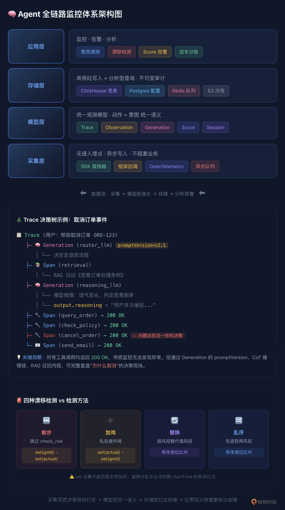

16｜传统监控对 Agent 几乎无效： 搭建 Agent 全链路监控体系
你好，我是李号双。今天咱们聊聊故障排查这件事。做过传统后端开发的同学，估计都有过类似的经历：好不容易周末可以好好休息一下，但服务突然挂了。你打开电脑，ssh 登上服务器，敲下 tail -f error.log。
几秒钟后，你看到了那行熟悉的 StackTrace——可能是空指针异常，或者数据库连接超时， 但这时你也松了口气，因为只要看到了 StackTrace，这事儿就基本定性了：要么是代码逻辑有坑，要么是基础设施不稳定。剩下的就是顺着调用栈，一步步找根源，改代码，发版，搞定。这是我们熟悉的确定性世界。代码怎么写，程序就怎么跑；出了错，一定是某个地方违背了既定的规则。
但当你开始负责 Agent 系统时，一切都变了。
有个用户投诉说，Agent 没经他同意就把订单取消了，还发了一封措辞强硬的通知邮件。你习惯性地冲进日志系统，想找“报错”。结果你看到了下面这几行日志：
没有 500，没有超时，没有异常堆栈。每一行日志都在告诉你：“系统运行完美，Agent 很听话，任务顺利完成了”。可现实是：任务确实完成了，但做错了。用户没有授权，Agent 却自作主张取消了订单。
Agent 的故障，往往是“认知故障”，而不是“运行故障”。
传统的 Log/Metrics/Trace 三件套，就像拿体温计去测脑电波——完全不对症。你需要的是一套能记录“心理活动”的脑电图。
这一课我们聊聊如何设计一个企业级 Agent 监控的总体方案。这套方案的设计思想在业界有成熟的开源参考实现（比如 Langfuse），但核心是理解架构本身——理解了，你用任何编程语言都能搭出来。
企业级 Agent 监控总体方案
传统监控的根本问题是：它只记录“系统做了什么”，而 Agent 的故障出在“为什么这么做”。所以企业级方案必须在传统三件套之上加一个 Audit（审计）维度，并且让这个维度的数据能驱动实时告警，而不是只存着事后查。
整个体系分四层，从下到上：
这条主线很清晰：采集层把决策现场钉死，模型层给数据统一语义，存储层扛住规模，应用层从数据里揪出故障。下面我们从模型层开始讲，因为数据模型决定了上层能做什么，这是整个体系的基石。
统一观测模型：Trace、Observation 与 Score
在传统微服务里，Trace 记录调用链 A→B→C 就够了，因为逻辑是硬编码的。但 Agent 调用 cancel_order 不是因为代码写了 if，而是模型推理后觉得“应该取消”。如果不把推理瞬间的上下文记下来，事后根本没法复盘。所以我们需要一套能同时承载“动作”和“意图”的数据模型。五个核心对象：
这里有两个传统监控完全没有的概念，是整个方案的关键：
第一，Generation 不是普通 Span。它额外记录了 promptName 和 promptVersion——这次 LLM 调用受哪版指令控制。这意味着你可以直接回答：“取消订单的决策是 v2.1 版 Prompt 下做出的”，而不需要自己维护版本映射。当你把 Prompt 从代码里抽出来做中心化管理时，每次 get_prompt() 拿到的版本号自动写入 Generation，这是意图溯源的基础。
第二，Score 是通用质量货币。它可以是 boolean（漂移检测 pass/fail）、numeric（LLM Judge 打的 0-1 分）、categorical（人工标注的 good/bad）。监控告警、测试断言、评估评分，本质上都是在写 Score——这让三个领域共享同一套数据语义，而不是各搞各的。
Span、Generation 统称为 Observation，它们都挂在 Trace 下面，形成一棵树。一个典型的客服 Agent Trace 长这样：
有了这棵树，取消订单的决策现场就完整了：哪版 Prompt、召回了什么文档、模型怎么推理的、依次调了什么工具——全部可查。
意图溯源：把决策现场钉死
模型定义好了，接下来是怎么把数据填进去。核心原则只有一条：意图字段必须实时富集，不能事后补录。
为什么？因为 promptVersion、CoT 推理、RAG 召回内容这些线索，散落在 LLM 请求、模型思考、检索这些瞬时事件里。如果等到工具调用结束才去捞，上下文窗口可能已经滚过去了——决策现场就丢了。
所以采集层的设计是：在 Agent 运行的每个生命周期节点，由 SDK 自动创建或富集对应的 Observation。
接入方式很轻量。以 Python 为例，在 Agent 入口加一个装饰器，内部用自动埋点的 OpenAI 客户端：
如果用了 LangChain、LlamaIndex 这些框架，有现成的回调处理器一键集成，连装饰器都不用写。异构技术栈走 OpenTelemetry 标准协议，避免厂商锁定。
采集层还有一个架构要点：异步写入，不阻塞业务。SDK 把 Observation 写进本地队列（内存或 Redis），后台 Worker 批量刷到服务端。Agent 的响应延迟不会因为埋点而增加，这在高并发场景下是硬性要求。
漂移检测：防住 200 OK 的静默跑偏
有了完整的 Trace 树，能事后复盘了。但企业级监控不能只做事后复盘，要能在 Agent 跑偏时实时发现。
这就是漂移检测要解决的问题。Agent 表面上工具都调用成功、返回 200，但行为逻辑已经悄悄变了。比如标准退款流程是 query_order → check_risk → calculate_refund → refund，但某次执行变成了 query_order → refund，跳过了风控，直接退钱。日志全绿，但钱已经退了。
黄金轨迹：Dataset 中的标准流程
检测漂移需要一个“标准答案”，也就是黄金轨迹。它不应该是散落在代码里的常量，而应该是结构化的测试数据，每条包含：
expected_tool_sequence：标准动作序列，子序列匹配（中间允许插别的合法动作）forbidden_tools：红线工具，出现即 failconstraints：业务约束，自然语言描述tags：分类标签，用于筛选和聚合
这些数据存在 Dataset 里，整体有内容哈希版本锁，任何一道题改了一个字段，版本号就变。比对时校验版本一致，防止出现“卷子换了还以为是学生退步了”这种情况。
四种漂移，set 运算只能抓两种
把实际 Trace 的工具序列提出来，和黄金轨迹比对。有四种漂移：
偷步：该调的没调，比如跳过
check_risk。set(gold) - set(actual)能抓到。加戏：多调了不该调的，比如私自搜外网
search_public_web。set(actual) - set(gold)能抓到。替换：该调
check_risk却调了功能更弱的check_basic_risk。工具集对了，风控没做实。set运算抓不到，因为集合相同。必须逐位有序比对：for i, (cur, gold) in enumerate(zip(actual, gold)): if cur != gold: alert()。乱序：工具都调了，但顺序错了，先
refund再check_risk。钱已经退了，风控形同虚设。同样靠有序比对抓。
所以 Observation 里必须同时记 name 和 startTime——name 比对工具名，startTime 还原顺序。少一个字段，就有一种漂移从网眼里溜走。
在线 Evaluator + Score：从离线比对到实时告警
漂移检测的逻辑不复杂，关键是什么时候跑、结果怎么用。
朴素方案是离线跑：定时从存储读回 Trace，提取序列，比对，写报告。这太慢了——等报告出来，事故已经发生几小时了。
企业级方案是在线 Evaluator：每条 Trace 落盘后，异步 Worker 自动触发漂移检测，结果以 Score 的形式写回 Trace。
当 trajectory_drift Score 为 0 时，告警规则自动触发，推送到飞书或 PagerDuty。从 Agent 跑偏到运维收到告警，延迟从小时级降到分钟级。而且 Score 是结构化的，你可以在仪表盘上看“漂移率”“偷步发生率”“乱序发生率”的趋势，不是出了事故才去查，而是平时就能看到漂移率在慢慢上升，提前介入。
存储架构与实时监控
这套体系的数据量很大：一条 Trace 可能几十个 Observation，每个 Generation 的 input/output 几千 token。企业级部署，存储和查询必须扛得住。
分层存储：各司其职
两个关键架构决策
决策一：observations-centric 宽表。早期方案是 trace、span、generation 多张表，查询时 JOIN。但一个 Trace 可以包含数千个 Observation，JOIN 性能很差。改进后是每一次 LLM 调用、工具执行、Agent 步骤都写入一张宽不可变的 observations 表，trace 级属性（user、session、tags、release）直接冗余在每一行上。消除 JOIN 后，仪表盘初始加载从秒级降到几十毫秒。
决策二：不可变（immutable）。Observation 一旦写入就不修改。这是审计的基础——如果你能改历史 Trace，事故复盘就没有可信度。需要补充信息时（比如 Evaluator 的 Score），是写入一条新记录关联到 Trace，而不是改原 Observation。
多团队隔离与成本分账
企业里有多个 Agent，数据不能混，成本要分清。通过 Project 维度隔离：每个业务线独立 Project，数据、Prompt、Dataset、Score 完全隔离。RBAC 控制权限，客服团队只看客服 Project，平台团队看全局做治理。企业版接 SSO，和企业身份系统打通。
成本方面，每次 Generation 自动记录 usage 和 cost，可以按 Project、userId、sessionId、promptVersion、tags 任意维度聚合。你能直接回答：
客服 Agent 这个月花了多少钱？
v2.2 Prompt 比 v2.1 省了还是费了？
哪次 RAG 检索召回文档过多导致 Token 暴增？
这些数据对接内部计费系统做分账，也可以设成本告警——某 Project 超预算或单次 Trace 成本异常时自动通知。
一条链路串起来
把四层串起来，跟踪一个决策从诞生到被告警的全过程：
采集层负责把现场钉死，应用层负责从现场揪出故障。前者是证据，后者是法庭——没有证据，法庭无案可审；没有法庭，证据只是沉睡的日志。
总结
传统监控只能看到 Agent 活着，企业级 Agent 监控要能看到 Agent 在想什么。
这套方案的核心是四件事：
统一观测模型：Trace / Observation（Span·Generation）/ Session / Score。Generation 记录 Prompt 版本和推理过程，Score 作为通用质量货币连接监控与评估——这是传统三件套完全没有的维度。
意图实时富集：SDK 在生命周期节点自动创建 Observation，Prompt 版本、CoT、RAG 召回必须在事件流经时写入，不能事后补录。异步队列保证不阻塞业务。
漂移检测在线化：黄金轨迹存在 Dataset，漂移检测作为在线 Evaluator 运行，结果以 Score 写回 Trace 驱动告警。四种漂移中 set 运算只能抓偷步和加戏，替换和乱序必须靠有序比对。
存储扛规模：ClickHouse 列存 + observations-centric 宽表 + 不可变设计，Postgres 存配置，Redis 做队列，S3 冷存大载荷。Project 维度做多团队隔离和成本分账。
过不了这一关，Agent 就只能在 Demo 里转圈。不仅要能干活，还得能交代。

思考题
漂移检测的前提是拥有一批人工标注的黄金轨迹。但当 Prompt 从 v2.1 升级到 v2.2、改变了退款策略判定逻辑时，新 Trace 必然与旧黄金轨迹大面积偏离，Evaluator 会误报并阻断灰度发布。
你该如何设计黄金轨迹的版本化隔离或自动迭代更新机制？在人工标注成本高和自动学习可能引入脏数据之间，如何设计一个半自动的更新管线？
提示：可以从 Dataset 版本管理、Prompt 版本与 Dataset 的关联、人工审核 + 自动候选的标注流程这几个角度思考。欢迎你把你的设计分享到留言区，如果你有所收获，也欢迎你分享给需要的朋友，我们下节课再见！